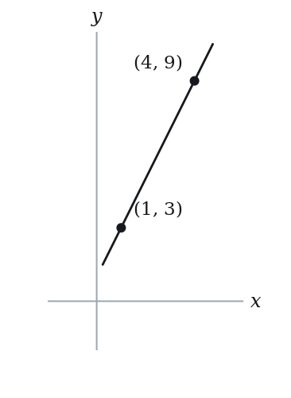
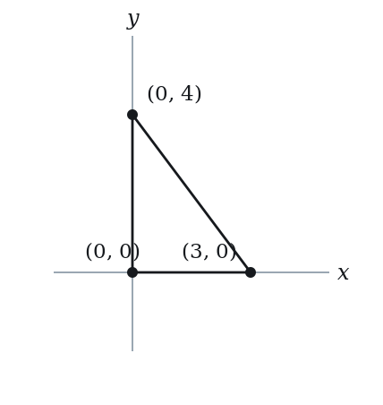
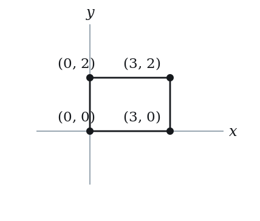
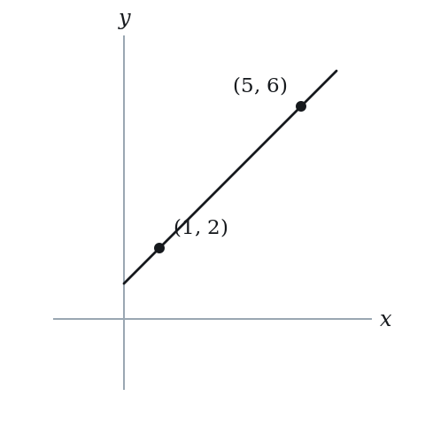

Parallel & Perpendicular Lines — Practice Set
Bank code: COG-PPL · Section: Coordinate Geometry · 30 questions — Easy 7 · Medium 15 · Hard 8
Parallel means equal slopes and different intercepts; perpendicular means the negative reciprocal, not one or the other; convert to y = mx + b before you compare.
Every question below is live in the question bank under the ID shown — the sheet and the portal are the same questions. Attempt a level with the clock running, then check Part C.
Part A — Questions
Quantitative Comparison — the four choices are always the same, so they are not reprinted: (A) Quantity A is greater · (B) Quantity B is greater · (C) The two quantities are equal · (D) The relationship cannot be determined from the information given
Level 1 · Easy — 7 questions · ~6 min
warm-up — these must be automatic
Q1 · COG-PPL-002 · MCQ · 45s
What is the slope of a line perpendicular to y = 4x − 3?
(A) -4
(B) -1/4
(C) 1/4
(D) 3
(E) 4
Q2 · COG-PPL-003 · MCQ · 60s
Line L has equation 2x + 4y = 8. Which of the following is parallel to L?
(A) y = 2x + 1
(B) y = -x + 3
(C) y = -(1/2)x + 6
(D) y = (1/2)x - 1
(E) y = -2x + 4
Q3 · COG-PPL-004 · Numeric Entry · 40s
If line A has slope 5, what is the slope of every line perpendicular to line A?
Numeric entry — write the number.
Q4 · COG-PPL-005 · MCQ · 50s
Are the lines y = 7 and x = 3 parallel, perpendicular, or neither?
(A) Parallel, because both are constants
(B) Neither, because one slope is 0 and the other is 3
(C) Perpendicular, because a horizontal line is perpendicular to a vertical line
(D) Parallel, because neither line passes through the origin
(E) Neither, because the product of their slopes is not -1
Q5 · COG-PPL-009 · MCQ · 40s
Two lines have equations y = mx + 3 and y = 5x - 1. For the two lines to be parallel, what must the value of m be?
(A) -5
(B) -1/5
(C) 1/5
(D) 3
(E) 5
Q6 · COG-PPL-014 · QC · 55s
Line A has slope m. Line B is perpendicular to line A and has slope n. Assume m ≠ 0.
Quantity A: m × n Quantity B: -1
Q7 · COG-PPL-019 · QC · 65s
Line 1: y = 3x + 2. Line 2: y = -3x + 2.
Quantity A: The slope of a line perpendicular to Line 1 Quantity B: The slope of a line perpendicular to Line 2
Level 2 · Medium — 15 questions · ~22 min
two or three steps, one planted trap each
Q8 · COG-PPL-011 · MCQ · 70s
What is the equation of the line that passes through (2, 5) and is parallel to y = -3x + 1?
(A) y = -3x + 11
(B) y = -3x - 1
(C) y = (1/3)x + 5
(D) y = 3x - 1
(E) y = -3x + 5
Q9 · COG-PPL-012 · MCQ · 75s
In the xy-plane, line k is perpendicular to the line y = (1/2)x − 3 and passes through the point (4, 1). Which of the following is an equation of line k?
(A) y = 2x - 7
(B) y = -2x + 9
(C) y = (1/2)x + 1
(D) y = -2x + 1
(E) y = 2x + 1
Q10 · COG-PPL-015 · Numeric Entry · 75s
The line 4x - ky = 8 is parallel to the line y = 2x + 3. What is the value of k?
Numeric entry — write the number.
Q11 · COG-PPL-016 · Select all that apply · 100s
Which of the following are equations of lines that are parallel to, and different from, the line y = −4x + 2? Select all that apply.
(A) 4x + y = 7
(B) 8x + 2y = 5
(C) y = 4x - 2
(D) y = -4x + 2
(E) -4x - y = 10
Q12 · COG-PPL-017 · MCQ · 70s
Line L has equation 5x + 2y = 10. What is the slope of any line perpendicular to L?
(A) -5/2
(B) -2/5
(C) 2/5
(D) 5/2
(E) 5
Q13 · COG-PPL-018 · Numeric Entry · 100s
Point A is at (1, 3) and point B is at (4, 9). A line is drawn through A and B. What is the y-intercept of the line perpendicular to AB that passes through the midpoint of AB?

Numeric entry — write the number.
Q14 · COG-PPL-021 · Numeric Entry · 70s
The lines y = (k+1)x + 3 and y = 2kx - 5 are parallel. What is the value of k?
Numeric entry — write the number.
Q15 · COG-PPL-023 · MCQ · 60s
In the xy-plane, line p has equation ax + by = c, where b ≠ 0. What is the slope of a line parallel to p?
(A) a/b
(B) -a/b
(C) b/a
(D) -b/a
(E) c/b
Q16 · COG-PPL-024 · QC · 90s
Line 1 passes through (0, 0) and (3, 6). Line 2 is perpendicular to Line 1 and passes through (6, 3).
Quantity A: The y-intercept of Line 2 Quantity B: 6
Q17 · COG-PPL-029 · QC · 100s
Line 1: 3x + 4y = 12. Line 2: 4x - 3y = 6.
Quantity A: The product of the slopes of Line 1 and Line 2 Quantity B: -1
Q18 · COG-PPL-030 · MCQ · 120s
In the xy-plane, triangle ABC has vertices A(0, 0), B(3, 0), and C(0, 4). What is the equation of the altitude from A to side BC?

(A) y = 0
(B) x = 0
(C) y = (3/4)x
(D) y = -(4/3)x
(E) y = x
Q19 · COG-PPL-035 · MCQ · 90s
In the xy-plane, the vertices of a rectangle are at A(0, 0), B(3, 0), C(3, 2), and D(0, 2). A diagonal is drawn from A to C. What is the slope of the line perpendicular to AC that passes through B?

(A) -3/2
(B) -2/3
(C) -1/2
(D) 2/3
(E) 3/2
Q20 · COG-PPL-039 · QC · 160s
In the xy-plane, three lines L1, L2, and L3 form a right triangle. L1: y = 3x + 2. L2 is perpendicular to L1 and passes through (1, 5). L3 passes through the x-intercepts of L1 and L2.
Quantity A: The slope of L3 Quantity B: 0
Q21 · COG-PPL-KMF-004 · MCQ · 90s
In the xy-plane, line L has equation 2x + 6y = 9. Line M is perpendicular to L and crosses the x-axis at the point (4, 0). Which of the following points lies on line M?
(A) (7, -9)
(B) (7, -1)
(C) (7, 1)
(D) (7, 9)
(E) (7, 25)
Q22 · COG-PPL-KMF-006 · Numeric Entry · 75s
A right triangle is drawn in the xy-plane so that no side is parallel to either axis. The line through its longest side is y = kx + 4. Multiplying together the slopes of all three sides gives -6. What is the value of k?
Numeric entry — write the number.
Level 3 · Hard — 8 questions · ~17 min
where 162+ is won or lost
Q23 · COG-PPL-031 · Select all that apply · 130s
Which of the following pairs of lines are perpendicular to each other? Select all that apply.
(A) y = (2/5)x + 1 and y = -(5/2)x + 3
(B) 3x + y = 6 and x - 3y = 9
(C) y = 4 and x = -7
(D) y = 3x and y = 3x + 5
(E) 2x - y = 4 and x + 2y = 8
Q24 · COG-PPL-032 · Numeric Entry · 100s
The distance between the parallel lines 3x + 4y = 5 and 3x + 4y = 20 is what value?
Numeric entry — write the number.
Q25 · COG-PPL-033 · MCQ · 120s
Line L is perpendicular to the segment joining P(1, 2) and Q(5, 6), and passes through the midpoint of PQ. Which of the following points lies on L?

(A) (2, 4)
(B) (3, 3)
(C) (5, 2)
(D) (5, 3)
(E) (1, 5)
Q26 · COG-PPL-040 · Select all that apply · 180s
In the xy-plane, point P = (2, 3). Line L1 passes through P and is parallel to 4x + 6y = 12. Line L2 passes through P and is perpendicular to L1. Which of the following statements are true? Select all that apply.
(A) The slope of L1 is −3/2
(B) The slope of L2 is 3/2
(C) L1 has y-intercept 4/3
(D) L2 passes through the point (4, 6)
(E) L1 and L2 intersect at P = (2, 3)
Q27 · COG-PPL-KMF-003 · MCQ · 150s
Consider the straight line L given by y = 2x - 4 and the point P = (-1, 4). Reflect P across L to obtain P', so that L is the perpendicular bisector of segment PP'. What is the sum of the two coordinates of P'?
(A) -2
(B) 3
(C) 5
(D) 7
(E) 8
Q28 · SEC-CG-006 · MCQ · 110s
In the xy-plane, line L has equation 2x + 5y = 20. Line M is perpendicular to L and passes through the x-intercept of L. At what value of y does line M cross the y-axis?
(A) -25
(B) -10
(C) -4
(D) 4
(E) 25
Q29 · SEC-CG-032 · MCQ · 110s
In the xy-plane, circle C has center (2, 3), and the point (7, 15) lies on circle C. What is the slope of the line tangent to circle C at (7, 15)?
(A) -12/5
(B) -5/12
(C) 5/12
(D) 12/5
(E) 13/5
Q30 · SEC-CG-035 · Numeric Entry · 110s
In the xy-plane, line m passes through the point (6, 6) and is perpendicular to the line x + y = 2. The point (a, b) lies on line m and is halfway between (6, 6) and the line x + y = 2. What is the value of a + b?
Numeric entry — write the number.
The rest of this sheet is part of Pro
All 30 questions, the answer key and full worked solutions with every trap named — plus 75 concept notes and 9,629 questions.